msqrob2TMT: modelling sources of variability in TMT-based proteomics experiments, a use case
Christophe Vanderaa
Stijn Vandenbulcke
Lieven Clement
28 August 2025
Source:vignettes/msqrob2_workshop.rmd
msqrob2_workshop.rmdIntroduction
Mass spectrometry-based proteomics
Mass spectrometry (MS)-based proteomics aims at characterising the proteome content from biological samples. In a nutshell, the workflow starts with sample preparation where the samples are collected, and the protein content is extracted and digested into peptides. For TMT experiments, each sample is labelled and multiple samples are pooled together. Next, during the liquid chromatographt (LC) and ionisation, the peptides are passed through a chromatographic column and separated based on their physicochemical properties. Eluting peptides are ionised by an electrospray. A first round of MS records the ion’s m/z distribution for the intact ions. This provides an overview of the ions that elute from the column and allows for further separation of the ions in the m/z space. The second round of MS records the fragmented ions for a selection of ions. This provides the ion’s mass fingerprint that will later enable computational identification of the peptide sequence. The recorded spectral data is then processing using search engines leading to peptide-to-spectrum matches (PSM). Analyzing the spectral peaks generated by the TMT labels (coloured bars in the bottom of the figure) enables to quantify the corresponding peptide in its corresponding sample before pooling.
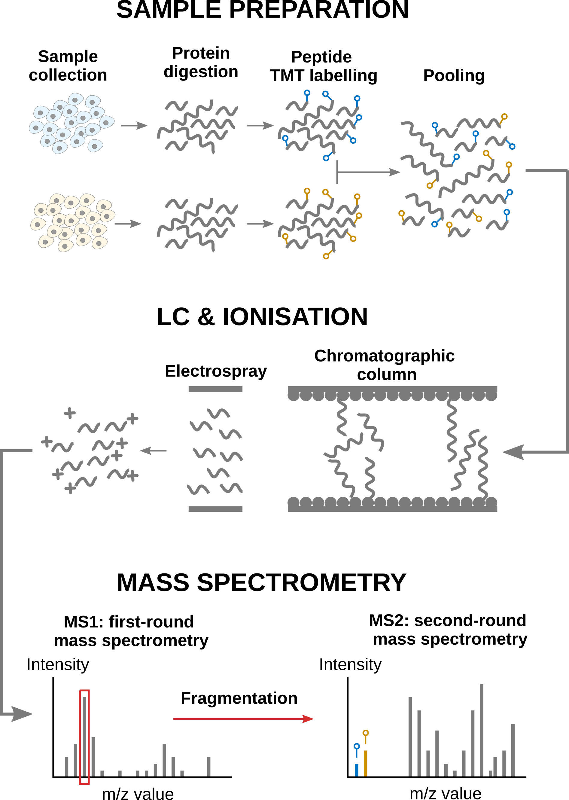
Overview of an MS-based proteomics workflow.
In this vignette
We will start from the quantified PSM data and infer protein-level differences between samples. To achieve this goal, we will apply the msqrob2TMT workflow, a data processing and modelling workflow dedicated to the analysis of TMT-based proteomics datasets. We will demonstrated the workflow using the study published by Plubell et al. 2017, illustrating the statistical concepts using a real-life use case.
You can read more about msqrob2TMT in:
Vandenbulcke S, Vanderaa C, Crook O, Martens L, Clement L. msqrob2TMT: robust linear mixed models for inferring differential abundant proteins in labelled experiments with arbitrarily complex design. bioRxiv. Published online March 29, 2024:2024.03.29.587218. doi:10.1101/2024.03.29.587218
Since this vignette is about a real-life study, we cannot objectively assess the results. For an msqrob2TMT analysis with ground tuth information, we refer to our spike-in vignette.
Before delving further into the use case, let us prepare our computational environment.
Load packages
First, we load the msqrob2 package.
We also load 4 additional packages for data manipulation and visualisation.
msqrob2 relies on parallelisation to improve
computational speed. To ensure this vignette can be run regardless of
hardware, we will disable parallelisation. Parallelisation is controlled
using the BiocParallel package.
Load data
Experimental context
The data used in this vignette has been published by Plubell et al. 2017 (PXD005953). The objective of the experiment was to explore the impact of low-fat and high-fat diets on the proteomic content of adipose tissue in mice. It also assesses whether the duration of the diet may impact the results. The authors assigned twenty mice into four groups (5 mice per group) based on their diet, either low-fat (LF) or high-fat (HF), and the duration of the diet, which was classified as short (8 weeks) or long (18 weeks). Samples from the epididymal adipose tissue were extracted from each mice. The samples were then randomly distributed across three TMT 10-plex mixtures for analysis. In each mixture, two reference labels were used, each containing pooled samples that included a range of peptides from all the samples. Not all labels were used, leading to an unbalanced design. Each TMT 10-plex mixture was fractionated into nine parts and subjected to synchronous precursor selection, resulting in a total of 27 MS runs.
Getting the data
The data were reanalyzed by Huang et al. 2020
and have been deposited in the MSV000084264 MASSiVE
repository, but we will retrieve the timestamped data from our Zenodo repository. To
facilitate management of the files, we here download them using the
BiocFileCache package. We need 2 files: the Skyline
identification and quantification table generated by the authors and the
sample annotation files. BiocFileCache ensures that the
files are downloaded once, hence the chunk below will take some time
only the first time you run it.
library("BiocFileCache")
bfc <- BiocFileCache()
psmFile <- bfcrpath(bfc, "https://zenodo.org/records/14767905/files/mouse_psms.txt?download=1")
annotFile <- bfcrpath(bfc, "https://zenodo.org/records/14767905/files/mouse_annotations.csv?download=1")Now the files are downloaded, we can load the psm table. Each row in
the psm data table contains information for one PSM (the table below
shows the first 6 rows). Note that columns that start with
"Abundance." contain the quantitative values for each TMT
label.
psms <- read.delim(psmFile)| Checked | Confidence | Identifying.Node | PSM.Ambiguity | Annotated.Sequence | Modifications | X..Protein.Groups | X..Proteins | Master.Protein.Accessions | Master.Protein.Descriptions | Protein.Accessions | Protein.Descriptions | X..Missed.Cleavages | Charge | DeltaScore | DeltaCn | Rank | Search.Engine.Rank | m.z..Da. | MH…Da. | Theo..MH…Da. | DeltaM..ppm. | Deltam.z..Da. | Activation.Type | MS.Order | Isolation.Interference…. | Average.Reporter.S.N | Ion.Inject.Time..ms. | RT..min. | First.Scan | Spectrum.File | File.ID | Abundance..126 | Abundance..127N | Abundance..127C | Abundance..128N | Abundance..128C | Abundance..129N | Abundance..129C | Abundance..130N | Abundance..130C | Abundance..131 | Quan.Info | Ions.Score | Identity.Strict | Identity.Relaxed | Expectation.Value | Percolator.q.Value | Percolator.PEP |
|---|---|---|---|---|---|---|---|---|---|---|---|---|---|---|---|---|---|---|---|---|---|---|---|---|---|---|---|---|---|---|---|---|---|---|---|---|---|---|---|---|---|---|---|---|---|---|---|---|
| False | High | Mascot (A2) | Unambiguous | [K].aIDILDR.[SM] | N-Term(TMT6plex) | 1 | 1 | Q61084 | Mitogen-activated protein kinase kinase kinase 3 OS=Mus musculus GN=Map3k3 PE=1 SV=1 | 0 | 2 | 0 | 0 | 1 | 1 | 522.8161 | 1044.625 | 1044.625 | -0.14 | -0.00008 | CID | MS2 | 2.279464 | 10.5 | 42.390 | 63.4111 | 16103 | PAMI-194_Mouse_U-Dd_TMT_40ug_28pctACN_25cm_120min_20160426_OT.raw | F3.6 | 2382.454 | 2429.068 | 2707.243 | 3317.650 | 5035.093 | 3031.7993 | 4808.5522 | 2583.115 | 3103.613 | 2795.283 | NA | 40 | 25 | 18 | 0.0003802 | 0.0008956 | 0.0111900 | ||
| False | High | Mascot (C2) | Unambiguous | [K].aLEENNNFSk.[M] | N-Term(TMT6plex); K10(TMT6plex) | 1 | 1 | P55821 | Stathmin-2 OS=Mus musculus GN=Stmn2 PE=1 SV=1 | 0 | 2 | NA | 0 | 1 | 2 | 812.4410 | 1623.875 | 1623.874 | 0.26 | 0.00021 | CID | MS2 | 20.489330 | 0.8 | 116.000 | 38.9028 | 7622 | PAMI-176_Mouse_A-J_TMT_40ug_22pctACN_25cm_120min_20160223_OT.raw | F1.3 | 1112.530 | NA | NA | NA | NA | 389.5883 | 963.0698 | NA | NA | NA | NA | 49 | 29 | 22 | 0.0000932 | 0.0000000 | 0.0000510 | ||
| False | High | Mascot (C2) | Rejected | [K].eMISDIk.[F] | N-Term(TMT6plex); K7(TMT6plex) | 0 | 1 | Q5SQM0 | Echinoderm microtubule-associated protein-like 6 OS=Mus musculus GN=Eml6 PE=2 SV=1 | 0 | 2 | 0 | 0 | 1 | 1 | 647.3786 | 1293.750 | 1293.749 | 0.84 | 0.00054 | CID | MS2 | 62.114720 | 25.4 | 50.658 | 45.5494 | 10094 | PAMI-176_Mouse_A-J_TMT_40ug_24pctACN_25cm_120min_20160223_OT.raw | F1.4 | 8606.559 | 10042.301 | 7976.240 | 5196.599 | 9381.061 | 12227.7070 | 6418.2720 | 5791.740 | 9665.493 | 5747.680 | NA | 11 | 28 | 21 | 0.5635688 | 0.0016120 | 0.0284500 | ||
| False | High | Mascot (C2) | Unambiguous | [KR].iIDFGLAR.[HQRT] | N-Term(TMT6plex) | 4 | 3 | Q3UIZ8; Q5SUV5; Q8VCR8 | Myosin light chain kinase 3 OS=Mus musculus GN=Mylk3 PE=1 SV=1; Myosin light chain kinase family member 4 OS=Mus musculus GN=Mylk4 PE=1 SV=2; Myosin light chain kinase 2, skeletal/cardiac muscle OS=Mus musculus GN=Mylk2 PE=1 SV=2 | 0 | 2 | 0 | 0 | 1 | 1 | 567.3476 | 1133.688 | 1133.688 | -0.09 | -0.00005 | CID | MS2 | 30.288610 | 13.5 | 41.830 | 70.4334 | 19108 | PAMI-176_Mouse_A-J_TMT_40ug_30pctACN_25cm_120min_20160223_OT.raw | F1.7 | 4964.429 | 5950.643 | 3133.549 | 3321.042 | 2914.397 | 3274.3197 | 3284.3334 | 4714.300 | 3846.105 | 5461.438 | NA | 41 | 24 | 17 | 0.0002663 | 0.0000983 | 0.0004159 | ||
| False | High | Mascot (B2) | Unambiguous | [KR].iQLWDTAGQER.[FY] | N-Term(TMT6plex) | 7 | 1 | O35963 | Ras-related protein Rab-33B OS=Mus musculus GN=Rab33b PE=1 SV=1 | 0 | 3 | NA | 0 | 1 | 2 | 515.9459 | 1545.823 | 1545.822 | 0.49 | 0.00025 | CID | MS2 | 14.174430 | 5.2 | 116.000 | 63.1792 | 15687 | PAMI-176_Mouse_K-T_TMT_40ug_26pctACN_25cm_120min_20160223_OT.raw | F2.5 | 2202.812 | 1313.995 | 1942.837 | 2381.060 | 1443.969 | 1701.8316 | 968.0946 | 1867.904 | 910.823 | 1371.243 | NA | 28 | 28 | 21 | 0.0092083 | 0.0000000 | 0.0000261 | ||
| False | High | Mascot (A2) | Unambiguous | [K].aIDILDR.[SM] | N-Term(TMT6plex) | 1 | 1 | Q61084 | Mitogen-activated protein kinase kinase kinase 3 OS=Mus musculus GN=Map3k3 PE=1 SV=1 | 0 | 2 | 0 | 0 | 1 | 1 | 522.8161 | 1044.625 | 1044.625 | -0.14 | -0.00008 | CID | MS2 | 21.614820 | 19.0 | 116.000 | 62.4027 | 15935 | PAMI-194_Mouse_U-Dd_TMT_40ug_26pctACN_25cm_120min_20160426_OT.raw | F3.5 | 6064.501 | 3790.208 | 4328.930 | 6528.889 | 6080.098 | 7705.8087 | 7836.0572 | 4606.420 | 5347.845 | 5869.469 | NA | 42 | 25 | 18 | 0.0002350 | 0.0005618 | 0.0067230 |
We also load the annotation table. Each row in the annotation table contains information for one sample (the table below shows the first 6 rows).
coldata <- read.csv(annotFile)| Channel | Condition | Run | BioReplicate | Mixture | Fraction | TechRepMixture |
|---|---|---|---|---|---|---|
| 126 | Long_LF | PAMI-176_Mouse_A-J_TMT_40ug_30pctACN_25cm_120min_20160223_OT.raw | PAMI-176_Mouse_A-J.X126 | PAMI-176_Mouse_A-J | 40ug_30pctACN_25cm_120min_20160223 | 1 |
| 126 | Long_LF | PAMI-176_Mouse_A-J_TMT_40ug_28pctACN_25cm_120min_20160223_OT.raw | PAMI-176_Mouse_A-J.X126 | PAMI-176_Mouse_A-J | 40ug_28pctACN_25cm_120min_20160223 | 1 |
| 126 | Long_LF | PAMI-176_Mouse_A-J_TMT_40ug_90pctACN_25cm_120min_20160223_OT.raw | PAMI-176_Mouse_A-J.X126 | PAMI-176_Mouse_A-J | 40ug_90pctACN_25cm_120min_20160223 | 1 |
| 126 | Long_LF | PAMI-176_Mouse_A-J_TMT_40ug_40pctACN_25cm_120min_20160223_OT.raw | PAMI-176_Mouse_A-J.X126 | PAMI-176_Mouse_A-J | 40ug_40pctACN_25cm_120min_20160223 | 1 |
| 126 | Long_LF | PAMI-176_Mouse_A-J_TMT_40ug_22pctACN_25cm_120min_20160223_OT.raw | PAMI-176_Mouse_A-J.X126 | PAMI-176_Mouse_A-J | 40ug_22pctACN_25cm_120min_20160223 | 1 |
| 126 | Long_LF | PAMI-176_Mouse_A-J_TMT_40ug_24pctACN_25cm_120min_20160223_OT.raw | PAMI-176_Mouse_A-J.X126 | PAMI-176_Mouse_A-J | 40ug_24pctACN_25cm_120min_20160223 | 1 |
We perform a little cleanup of the sample annotations to generate the information needed for later data modelling, namely we extract the diet type and the duration of the diet from the condition variable.
coldata$Duration <- gsub("_.*", "", coldata$Condition)
coldata$Diet <- gsub(".*_", "", coldata$Condition)We will also subset the data set to reduce computational costs. If you want to run the vignette on the full data set, you can skip this chunk. We here randomly sample 500 proteins from the experiment.
The QFeatures data class
Finally, we combine the data into a QFeatures object.
The QFeatures package provides infrastructure to manage and
analyse quantitative features from mass spectrometry experiments. It is
based on the SummarizedExperiment and
MultiAssayExperiment classes. It leverages the hierarchical
structure of proteomics experiments: data proteins are composed of
peptides, themselves produced by spectra. Throughout the aggregation and
processing of these data, the relations between assays are tracked and
recorded, thus allowing users to easily navigate across spectra, peptide
and protein quantitative data.

Illustration of the QFeatures data class.
The readQFeatures() allows for seamless conversion of
tabular data into a QFeatures object. In order to link the
annotation table with the PSM data (from the Skyline PSM table), the
annotation table must contain a runCol column with run
names to be matched with the run names in the PSM table (for Skyline, it
is stored in the Spectrum.File column). We also add a
quantCols column in the annotation table. It will allow to
link each sample to the quantification column in the PSM table. See
?readQFeatures() for more details.
coldata$runCol <- coldata$Run
coldata$quantCols <- paste0("Abundance..", coldata$Channel)
mouse <- readQFeatures(psms, colData = coldata,
quantCols = unique(coldata$quantCols),
runCol = "Spectrum.File", name = "psms")
names(mouse) <- sub("^.*(Mouse.*ACN).*raw", "\\1", names(mouse))
mouse## An instance of class QFeatures (type: bulk) with 27 sets:
##
## [1] Mouse_A-J_TMT_40ug_14pctACN: SummarizedExperiment with 198 rows and 10 columns
## [2] Mouse_A-J_TMT_40ug_20pctACN: SummarizedExperiment with 481 rows and 10 columns
## [3] Mouse_A-J_TMT_40ug_22pctACN: SummarizedExperiment with 514 rows and 10 columns
## ...
## [25] Mouse_U-Dd_TMT_40ug_30pctACN: SummarizedExperiment with 726 rows and 10 columns
## [26] Mouse_U-Dd_TMT_40ug_40pctACN: SummarizedExperiment with 566 rows and 10 columns
## [27] Mouse_U-Dd_TMT_40ug_90pctACN: SummarizedExperiment with 251 rows and 10 columnsWe now have a QFeatures object with 27 sets, each
containing data associated with an MS run. The sample annotation can be
retrieved using colData().
head(colData(mouse))## DataFrame with 6 rows and 11 columns
## Channel Condition Run BioReplicate Mixture
## <character> <character> <character> <character> <character>
## 1 126 Long_LF PAMI-176_M... PAMI-176_M... PAMI-176_M...
## 2 127N Long_LF PAMI-176_M... PAMI-176_M... PAMI-176_M...
## 3 127C Long_M PAMI-176_M... PAMI-176_M... PAMI-176_M...
## 4 128N Short_LF PAMI-176_M... PAMI-176_M... PAMI-176_M...
## 5 128C Norm PAMI-176_M... PAMI-176_M... PAMI-176_M...
## 6 129N Long_M PAMI-176_M... PAMI-176_M... PAMI-176_M...
## Fraction TechRepMixture Duration Diet runCol
## <character> <integer> <character> <character> <character>
## 1 40ug_14pct... 1 Long LF PAMI-176_M...
## 2 40ug_14pct... 1 Long LF PAMI-176_M...
## 3 40ug_14pct... 1 Long M PAMI-176_M...
## 4 40ug_14pct... 1 Short LF PAMI-176_M...
## 5 40ug_14pct... 1 Norm Norm PAMI-176_M...
## 6 40ug_14pct... 1 Long M PAMI-176_M...
## quantCols
## <character>
## 1 Abundance....
## 2 Abundance....
## 3 Abundance....
## 4 Abundance....
## 5 Abundance....
## 6 Abundance....We can also retrieve the quantitative values for each set using
assays().
assay(mouse[[1]])[1:5, 1:5]## PAMI-176_Mouse_A-J_TMT_40ug_14pctACN_25cm_120min_20160223_OT.raw_Abundance..126
## 12 NA
## 87 6833.269
## 335 NA
## 433 12512.472
## 434 49765.685
## PAMI-176_Mouse_A-J_TMT_40ug_14pctACN_25cm_120min_20160223_OT.raw_Abundance..127N
## 12 395.4659
## 87 13879.3746
## 335 NA
## 433 6235.6969
## 434 21062.5639
## PAMI-176_Mouse_A-J_TMT_40ug_14pctACN_25cm_120min_20160223_OT.raw_Abundance..127C
## 12 NA
## 87 8880.944
## 335 NA
## 433 5733.971
## 434 26067.937
## PAMI-176_Mouse_A-J_TMT_40ug_14pctACN_25cm_120min_20160223_OT.raw_Abundance..128N
## 12 864.8956
## 87 8984.1755
## 335 NA
## 433 6134.0270
## 434 19417.5524
## PAMI-176_Mouse_A-J_TMT_40ug_14pctACN_25cm_120min_20160223_OT.raw_Abundance..128C
## 12 3031.182
## 87 8763.722
## 335 NA
## 433 6151.314
## 434 19096.883Finally, the remaining PSM annotations are available for each set in
the corresponding rowData.
head(rowData(mouse[[1]]))## DataFrame with 6 rows and 39 columns
## Checked Confidence Identifying.Node PSM.Ambiguity Annotated.Sequence
## <character> <character> <character> <character> <character>
## 12 False High Mascot (C2... Unambiguou... [K].lQHELE...
## 87 False High Mascot (C2... Unambiguou... [R].nVELVD...
## 335 False High Mascot (C2... Unambiguou... [K].eEScVP...
## 433 False High Mascot (C2... Unambiguou... [K].dAEDQE...
## 434 False High Mascot (C2... Unambiguou... [K].dAEDQE...
## 543 False High Mascot (C2... Unambiguou... [K].aTEmVE...
## Modifications X..Protein.Groups X..Proteins Master.Protein.Accessions
## <character> <integer> <integer> <character>
## 12 N-Term(TMT... 0 1
## 87 N-Term(TMT... 1 1 O08528
## 335 N-Term(TMT... 1 1 O08715
## 433 N-Term(TMT... 1 1 O35685
## 434 N-Term(TMT... 1 1 O35685
## 543 N-Term(TMT... 1 1 O54724
## Master.Protein.Descriptions Protein.Accessions Protein.Descriptions
## <character> <character> <character>
## 12 P13542 Myosin-8 O...
## 87 Hexokinase... O08528 Hexokinase...
## 335 A-kinase a... O08715 A-kinase a...
## 433 Nuclear mi... O35685 Nuclear mi...
## 434 Nuclear mi... O35685 Nuclear mi...
## 543 Caveolae-a... O54724 Caveolae-a...
## X..Missed.Cleavages Charge DeltaScore DeltaCn Rank
## <integer> <integer> <numeric> <numeric> <integer>
## 12 0 3 NA 0 1
## 87 0 2 0.8679 0 1
## 335 0 3 1.0000 0 1
## 433 0 2 0.8491 0 1
## 434 0 3 0.9706 0 1
## 543 0 3 1.0000 0 1
## Search.Engine.Rank m.z..Da. MH...Da. Theo..MH...Da. DeltaM..ppm.
## <integer> <numeric> <numeric> <numeric> <numeric>
## 12 2 537.944 1611.82 1611.82 0.66
## 87 1 723.376 1445.75 1445.74 1.34
## 335 1 927.763 2781.27 2781.27 1.78
## 433 1 802.930 1604.85 1604.85 0.08
## 434 1 535.623 1604.85 1604.85 0.42
## 543 1 726.674 2178.01 2178.01 0.23
## Deltam.z..Da. Activation.Type MS.Order Isolation.Interference....
## <numeric> <character> <character> <numeric>
## 12 0.00035 CID MS2 55.1778
## 87 0.00097 CID MS2 23.0922
## 335 0.00165 CID MS2 19.8995
## 433 0.00007 CID MS2 21.5321
## 434 0.00022 CID MS2 16.0577
## 543 0.00017 CID MS2 27.5028
## Average.Reporter.S.N Ion.Inject.Time..ms. RT..min. First.Scan
## <numeric> <numeric> <numeric> <integer>
## 12 21.5 40.795 38.3689 7110
## 87 28.4 116.000 36.9670 6602
## 335 NA 35.000 39.5357 7534
## 433 20.9 116.000 33.0664 5189
## 434 81.7 30.235 33.0967 5201
## 543 9.2 98.068 41.2553 8149
## Spectrum.File File.ID Quan.Info Ions.Score Identity.Strict
## <character> <character> <logical> <integer> <numeric>
## 12 PAMI-176_M... F1.1 NA 47 25
## 87 PAMI-176_M... F1.1 NA 53 25
## 335 PAMI-176_M... F1.1 NA 65 19
## 433 PAMI-176_M... F1.1 NA 53 27
## 434 PAMI-176_M... F1.1 NA 34 27
## 543 PAMI-176_M... F1.1 NA 50 21
## Identity.Relaxed Expectation.Value Percolator.q.Value Percolator.PEP
## <numeric> <numeric> <numeric> <numeric>
## 12 18 7.87102e-05 0.0000000 5.804e-05
## 87 18 1.54340e-05 0.0000000 8.144e-05
## 335 13 2.55413e-07 0.0000000 1.938e-06
## 433 20 3.15610e-05 0.0000000 4.442e-05
## 434 20 2.16708e-03 0.0001685 1.342e-03
## 543 14 1.36813e-05 0.0000000 1.170e-06Data preprocessing
msqrob2 relies on the QFeatures data
structure, meaning that we can directly make use of
QFeatures’ data preprocessing functionality (see also the
QFeatures documentation).
The very first data processing step for MS experiments is to replace
any zero PSM intensity by a missing value (see
?zeroIsNA()). This is because true zeros (the peptide is
absent from the sample) cannot be distinguished from technical zeros
(the peptide was missed by the instrument). However, Skyline already
encodes zeros by NAs, so we can skip this step.
PSM filtering
We first filter features for which more than 70% of the intensities are missing in a run. We keep the spectrum as soon as the reporter ions are observed in at least 3 out of 10 TMT labels of the run (same cut-off as applied in Huang et al. 2020)/.
We next remove PSMs that could not be mapped to a protein or that map
to multiple proteins (the protein identifier contains multiple
identifiers separated by a ;). We use
filterFeatures() that will keep the row that fulfill the
condition below. Note that Protein.Accessions is a column
generated by Skyline that is available in the rowData.
mouse <- filterFeatures(
mouse, ~ Protein.Accessions != "" & ## Remove failed protein inference
!grepl(";", Protein.Accessions)) ## Remove protein groupsPeptide ions that were identified with multiple PSMs in a run are
collapsed to the PSM with the highest summed intensity over the labels,
a strategy that is also used by MSstats. We will again use
filterFeatures(), but the highest summed intensity PSM
information is not available in the rowData so we need to
create it manually.
We therefore
- Make a new variable for ionID in the rowData.
- We calculate the
rowSumsfor each ion. - Make a new variable
psmRankthat ranks the PSMs for each ionID based on the summed intensity. - We store the new information back in the
rowData. - For each ion that maps to multiple PSMs, only keep the PSM with the highest summed intensity, that is that ranks first.
for (i in names(mouse)) {
rowdata <- rowData(mouse[[i]])
rowdata$ionID <- paste0(rowdata$Annotated.Sequence, rowdata$Charge) ## 1.
rowdata$rowSums <- rowSums(assay(mouse[[i]]), na.rm = TRUE) ## 2.
rowdata <- data.frame(rowdata) |>
group_by(ionID) |>
mutate(psmRank = rank(-rowSums)) ## 3.
rowData(mouse[[i]]) <- DataFrame(rowdata) ## 4.
}
mouse <- filterFeatures(mouse, ~ psmRank == 1) ## 5.Note that we now implicitly collapsed the PSM-level data into peptide ion data, where each row represents a PSM, but also a unique ion within a run. So we will refer to the data as “PSM-level” or “ion-level” interchangeably.
Preprocessing workflow
We can now prepare the data for modelling. The workflow consists of
mains steps that ensure the data complies to msqrob2’s
requirements:
- Intensities are log-transformed.
- Samples are normalised.
- (optionally) PSMs intensities are summarised into protein abundance values for protein-level workflows.
sNames <- names(mouse)
mouse <- logTransform( ## 1.
mouse, sNames, name = paste0(sNames, "_log"), base = 2
)
mouse <- normalize( ## 2.
mouse, paste0(sNames, "_log"), name = paste0(sNames, "_norm"),
method = "center.median"
)
mouse <- aggregateFeatures( ## 3.
mouse, i = paste0(sNames, "_norm"), name = paste0(sNames, "_proteins"),
fcol = "Protein.Accessions", fun = MsCoreUtils::medianPolish,
na.rm=TRUE
)We remove the reference labels that were used by the MSstatsTMT
authors to obtain normalisation factors since msqrob2TMT workflows do
not require normalisation from reference label. The information about
which labels are normalisation labels is available from the
colData, in the Condition column.
table(mouse$Condition)##
## Long_HF Long_LF Long_M Norm Short_HF Short_LF
## 45 45 36 54 45 45We remove any sample that is marked as Norm. We also
remove sample that are annotated as Long_M since we could
not find documentation for this group.
mouse <- subsetByColData(
mouse, mouse$Condition != "Norm" & mouse$Condition != "Long_M"
)We conclude the preprocessing by joining the assays of the different
runs in a single PSM set for PSM-level models. In order to correctly
match PSMs across rus, we provide the fcol argument,
telling the function to join PSM with the same ionID in one
line.
mouse <- joinAssays(mouse, paste0(sNames, "_norm"), fcol = "ionID", "ions_norm")We do the same for joining the protein sets into a single set for
protein-level models. Note that we don’t need to provide
fcol since the function will use the set’s rownames
(generated by aggregateFeatures()).
mouse <- joinAssays(mouse, paste0(sNames, "_proteins"), "proteins")Statistical modelling
The preprocessed data can now be modelled to answer biologically relevant questions.
Model definition
Experimental design
As described above, samples (adipose tissue) originate from mice that
were either subject to a low-fat (LF) or high-fat
(HF) diet. Moreover, each of the diet was maintained for a
short duration (Short) or a long duration
(Long). Note that each group contains 5 mice but the
peptides from each sample have been fractionated in 9 fractions, leading
to 45 units per group.
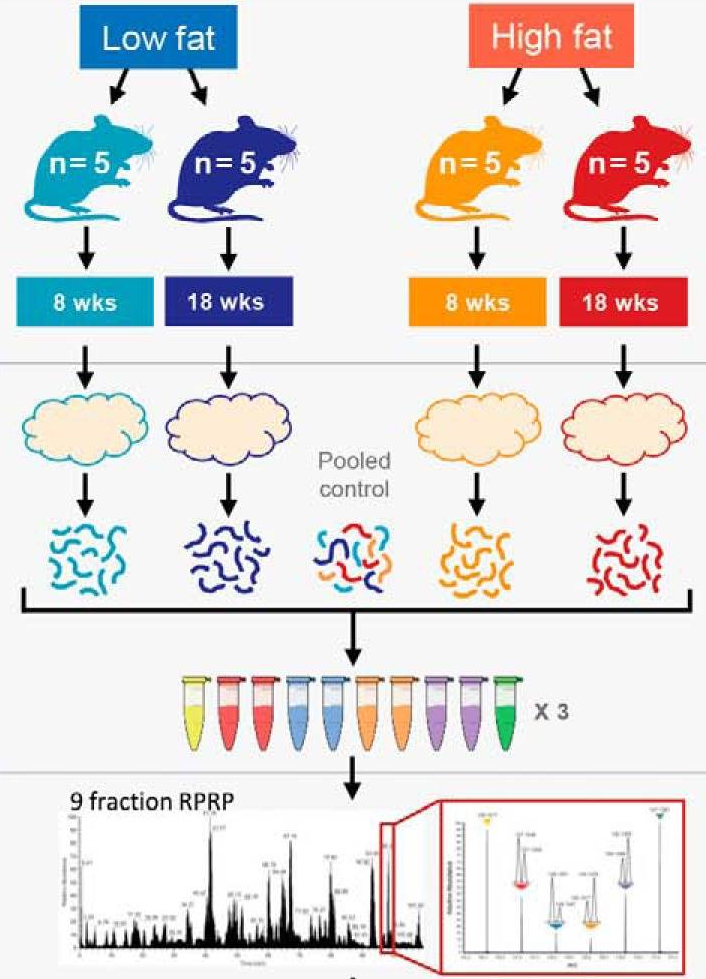
So first, we need to identify the experimental factors of interest. In this case, we are interested in the effects of diet type and the effect of diet duration. The table below confirms we have a balanced design for each condition.
table(Diet = mouse$Diet, Duration = mouse$Duration)## Duration
## Diet Long Short
## HF 45 45
## LF 45 45Sources of variation
Proteomics data contain several sources of variation that need to be accounted for by the model:
Treatment of interest: we model the source of variation induced by the experimental treatment of interest as a fixed effect. Fixed effects are effect that are considered non-random, i.e. the treatment effect is assumed to be the same and reproducible across repeated experiments, but it is unknown and has to be estimated. We will include
Dietas a fixed effect that models the fact that a change in diet type can induce changes in protein abundance. Similarly, we also includeDurationas a fixed effect to model the change in protein abundance induces by the diet duration. Finally, we will also include an interaction between the two variables allowing that the changes in protein abundance induced by diet type can be different whether the mice were fed for a short or long duration.Biological replicate effect: the experiment involves biological replication as the adipose tissue extracts were sampled from 20 mice (5 mice per Diet x Duration combination). Replicate-specific effects occurs due to uncontrollable factors, such as social behavior, feeding behavior, physical activity, occasional injury,… Two mice will never provide exactly the sample material, even were they genetically identical and manipulated identically. These effects are typically modelled as random effects which are considered as a random sample from the population of all possible mice and are assumed to be i.i.d normally distributed with mean 0 and constant variance, . The use of random effects thus models the correlation in the data, explicitly. We expect that intensities from the same mouse are more alike than intensities between mice.
## [1] 20- Labelling effects: the 20 mouse adipose tissue samples have been labelled using 18-plex TMT. We can expect that samples measured within the same TMT label may be more similar than samples measured within different TMT labels. Since these effects may not be reproducible from one experiment to another, for instance because each TMT kit may potentially contain different impurity ratios, we can account for this correlation using a random effect for TMT label. However, we will not model the effects of labels. Normalisation already removes part of the label effect and including a random effect for label nested within run (see below) is sufficient, as confirmed from previous spike-in studies.
TODO: include label effect or not?
## [1] 10- Mixture effects: the 20 mouse samples were assigned to one out of 3 mixtures. Again, we expect protein intensities from the same mixture will be more alike than those of different mixtures. Hence, we will add a random effect for mixture.
table(mouse$Mixture)##
## PAMI-176_Mouse_A-J PAMI-176_Mouse_K-T PAMI-194_Mouse_U-Dd
## 54 63 63- Run effects: protein intensities that are measured within the same run will be more similar than protein intensities between runs. We will use a random effect for run to explicitly model this correlation in the data. Note that each sample has been acquired in 9 fractions, each fraction being measured in a separate run. Accounting for the effects of run will also absorb the effects of fraction.
## [1] 27Spectrum effects: we will directly estimate the treatment effect at the protein-level from PSM-level data. This will again induce additional levels of correlation. The intensities for the different reporter ions in a TMT run within the same spectrum (PSM) will be more similar than the intensities between spectra. We therefore need to add a random effect term to account for the within PSM correlation structure. Note that a spectrum here contains the data from one peptide ion within a run. Hence, modelling a random effect for spectrum boils down to modelling a random effect for peptide ion nested within run.
Labelling effects nested in run: modelling the data at the PSM-level also implies that a label in a run contains multiple PSM intensities for each protein. Hence, intensities from different PSMs for a protein with the same label within a run will be more alike than intensities of different PSMs for the same protein with different labels and/or runs, and we will address this correlation with a random effect for label nested in run.
msqrob2 workflows rely on linear mixed models, which are
models that can estimate and predict fixed and random effects,
respectively.
Now we have identified the sources of variation, we can define a
model. msqrob2 also allows to model using main effects for
Diet and Duration, and a
Diet:Duration interaction, to account for proteins for
which the Diet effect changes according to
Duration, and vice versa, which can be written as
Diet + Duration + Diet:Duration, shortened into
Diet * Duration. Adding the technical sources of variation,
the model becomes.
model <- ~ 1 + Diet * Duration + ## (1) fixed effect for Diet and Duration with interaction
(1 | BioReplicate) + ## (2) random effect for biological replicate (mouse)
# (1 | Channel) + ## (3) random effect for label is negligible
(1 | Mixture) + ## (4) random effect for mixture
(1 | Run) + ## (5) random effect for MS run
(1 | Run:ionID) + ## (6) random effect for spectrum, i.e. ionID nested in run
(1 | Run:Channel) ## (7) random effect for label nested in MS runNote, that we do not suppress the intercept (the model start with
1 +), because the first level of every factor is absorbed
in the intercept.
TODO: keep below?
Note also that we have commented out the random effect for label in
the model. In practice, normalisation already removes part of the label
effect and is sufficient. You can experiment this yourself by removing
the comment sign # in front of (1 | Channel) +
across the vignette, and see how the results may change.
Now we have defined the models, we can run the msqrob2
statistical workflow.
Run the model
The statistical workflow starts with msqrobAggregate().
The function takes the QFeatures object, extracts the
quantitative values from the "ions_norm" set generated
after preprocessing, and fits model. The variables defined
in model are automatically retrieved from the
colData (i.e. "Diet", "Duration",
"Channel", "Run", "Mixture",
"BioReplicate") and from the rowData (i.e.
"ionID"). Moreover, we tell the function how the PSM-level
data is grouped to protein data through the fcol argument,
here we will group PSMs by the Protein.Accessions. The
function will generate a new set, proteins_msqrob, with
summarised protein values. This new set will also contain the modelling
output, stored in the rowData in the
msqrob_psm column. More specifically, the modelling output
is stored in the rowData for each protein as a
statModel object, one model per row (protein). We also
enable M-estimation (robust = TRUE) for improved robustness
against outliers and ridge penalisation (ridge = TRUE) to
stabilise the parameter estimation.
mouse <- msqrobAggregate(
mouse, i = "ions_norm",
formula = model,
fcol = "Protein.Accessions",
modelColumnName = "msqrob_psm",
name = "proteins_msqrob",
ridge = TRUE, robust = TRUE
)Once the models are estimated, we can start answering biological questions.
Hypothesis testing
In this section, you will learn how to convert a biological question into a statistical hypothesis.
Difference between low fat and high fat diet after short duration
A first question one can ask is: how are protein abundance affected
by diet when only considering a short diet duration? We need to convert
this question in a combination of the model parameters, also referred to
as a contrast. To aid defining contrasts, we will visualise the
experimental design using the ExploreModelMatrix package.
Since we are not interested in technical effects, we will only focus on
the variables of interest, here Diet * Duration.
library("ExploreModelMatrix")
vd <- VisualizeDesign(
sampleData = colData(mouse),
designFormula = ~ 0 + Diet * Duration,
textSizeFitted = 4
)
vd$plotlist## [[1]]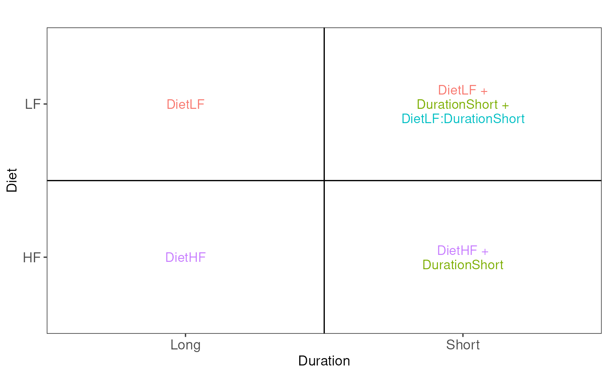
Assessing the difference between low-fat and high-fat diets for short
duration boils down to assessing the difference between the
Short_LF and Short_HF. The mean for the short
low-fat diet group is defined by
(Intercept) + DietLF + DurationShort + DietLF:DurationShort.
The mean for the short high-fat diet group is defined by
(Intercept) + DurationShort. The difference between the two
results in the contrast below:
contrast <- "ridgeDietLF + ridgeDietLF:DurationShort"Note that because we used ridge regression for modelling, we need to
prefix the parameter names with ridge. We can further
specify the null hypothesis, that is we are interest whether the
differences between the two groups is different from zero.
(hypothesis1 <- paste(contrast, "= 0"))## [1] "ridgeDietLF + ridgeDietLF:DurationShort = 0"We next use makeContrast() to build a contrast
matrix.
(L <- makeContrast(
hypothesis1,
parameterNames = c("ridgeDietLF","ridgeDurationShort","ridgeDietLF:DurationShort")
))## ridgeDietLF + ridgeDietLF:DurationShort
## ridgeDietLF 1
## ridgeDurationShort 0
## ridgeDietLF:DurationShort 1We can now test our null hypothesis using
hypothesisTest() which takes the QFeatures
object with the fitted model and the contrast matrix we just built.
Again, the results are stored in the set containing the model, here
proteins_msqrob
mouse <- hypothesisTest(
mouse, i = "proteins_msqrob", L, modelColumn = "msqrob_psm"
)Let us retrieve the result table from the rowData. Note
that the model column is named after the column name of the contrast
matrix L.
inference <- rowData(mouse[["proteins_msqrob"]])[[colnames(L)]]
inference$Protein <- rownames(inference)
head(inference)## logFC se df t pval adjPval Protein
## A2AJB7 1.982815e-10 2.252067e-05 68.05713 8.804421e-06 0.999993 1 A2AJB7
## A2AJK6 NA NA NA NA NA NA A2AJK6
## A2AQP0 NA NA NA NA NA NA A2AQP0
## A2AWP8 NA NA NA NA NA NA A2AWP8
## A6H8H2 NA NA NA NA NA NA A6H8H2
## B1AVY7 NA NA NA NA NA NA B1AVY7The table contains the hypothesis testing results for every protein.
Notice that some rows contain missing values. This is because data
modelling resulted in a fitError for some proteins.
TODO: remove below and demonstrate msqrobRefit?
We refer to another
vignette that describes how to deal with fitErrors. We
can use the table above directly to build a volcano plot using
ggplot2 functionality.
ggplot(inference) +
aes(x = logFC, y = -log10(adjPval)) +
geom_hline(yintercept = -log10(0.05)) +
geom_text_repel(data = filter(inference, adjPval < 0.05),
aes(label = Protein)) +
geom_point() +
ggtitle("Statistical inference on differences between LF and HF (short duration)",
paste("Hypothesis test:", gsub("ridgeCondition", "", colnames(L)), "= 0"))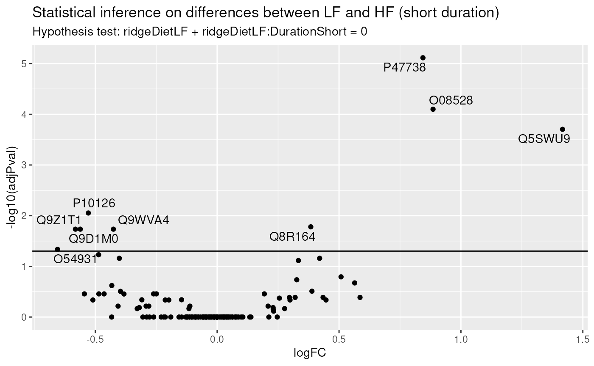
In this example (remember this is a subset of the complete data set), only a few proteins pass the significance threshold of 5%. Let us visualise the protein with the largest fold change.
## [1] "Q5SWU9"To obtain the required data, we perform a little data manipulation pipeline:
- We use the
QFeaturessubsetting functionality to retrieve all data related to Q5SWU9 and focusing on theions_normset that contains the preprocessed peptide ion data used for modelling. - We use
longForm()to convert the object into a table suitable for plotting. - We remove missing values for plotting and focus only on the data with short diet duration.
- We reorder the sample identifiers to improve visualisation.
ionData <- mouse[targetProtein, , "ions_norm"] |> #1
longForm(colvars = colnames(colData(mouse)), #2
rowvars = c("Protein.Accessions", "ionID")) |>
data.frame() |>
filter(!is.na(value) & Duration == "Short") |> #3
mutate(colname = factor(colname, levels = unique(colname[order(Condition)]))) #4We can now plot the log normalised intensities. Since the protein is modelled at the peptide ion level, multiple ion intensities are recorded in each sample. Each ion is linked across samples using a grey line. Samples are coloured according to the diet type. Finally, we split the plot in facets, one for each mixture, to visualise the heterogeneity induced by different pools of mice.
ggplot(ionData) +
aes(x = colname,
y = value) +
geom_line(aes(group = ionID), linewidth = 0.1) +
geom_point(aes(colour = Condition)) +
facet_grid(~ Mixture, scales = "free") +
labs(x = "Sample", y = "log2 intensity") +
ggtitle(targetProtein) +
theme_minimal() +
theme(axis.text.x = element_blank())
The statistical analysis revealed a significant increase (positive log fold change) of the abundance for Q5SWU9 in the group fed with a low-fat diet compared to the high-fat diet fed group (upon early diet duration). This finding can be visually validated as there is a systematic increase in peptide ion intensities between the low-fat diet group (blue) compared to the high-fat diet group (red).
Difference between low fat and high fat diet after long duration
The second question one can ask is what proteins are affected by diet when only considering, this time, a long diet duration. Following the same approach as above, the contrast becomes.
hypothesis2 <- "ridgeDietLF = 0"We run the same statistical analysis pipeline as above.
L <- makeContrast(
hypothesis2,
parameterNames = c("ridgeDietLF","ridgeDurationShort","ridgeDietLF:DurationShort")
)
mouse <- hypothesisTest(
mouse, i = "proteins_msqrob", L, modelColumn = "msqrob_psm"
)
inference <- rowData(mouse[["proteins_msqrob"]])[[colnames(L)]]
inference$Protein <- rownames(inference)And we plot the results.
ggplot(inference) +
aes(x = logFC, y = -log10(adjPval)) +
geom_hline(yintercept = -log10(0.05)) +
geom_text_repel(data = filter(inference, adjPval < 0.05),
aes(label = Protein)) +
geom_point() +
ggtitle("Statistical inference on differences between LF and HF (long duration)",
paste("Hypothesis test:", gsub("ridgeCondition", "", colnames(L)), "= 0"))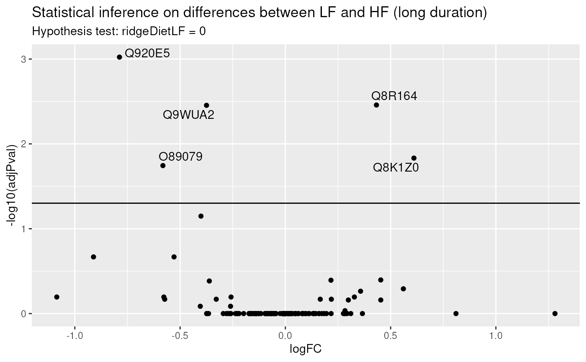
Again, only a few proteins come out differentially abundant between the two diets, but after a long diet duration. Surprisingly, there is only a small overlap between differential protein after short duration and after long duration. One hypothesis is that there is not sufficient data to detect a reliable difference. A solution would be to combine both short and long diet duration to retrieve an averaged systematic effect between diets that combine all available data. Another hypothesis is that diet duration may influence the effect of diet on the protein abundances. We will explore the two hypothesis in the following two sub-sections.
Average difference between low fat and high fat diet
One may want to identify the set of proteins that are systematically
differentially abundant between diets, irrespective of the duration. To
answer this question, we want to infer on the average difference between
group LF and group HF. The average low-fat
diet is defined by
((Intercept) + DietLF + DurationShort + DietLF:DurationShort + (Intercept) + DietLF)/2.
The average high-fat diet group is defined by
((Intercept) + DurationShort + (Intercept))/2. The
difference between the two results in the hypothesis below:
hypothesis3 <- "ridgeDietLF + (ridgeDietLF:DurationShort)/2 = 0"We next run again the same statistical analysis pipeline as above.
L <- makeContrast(
hypothesis3,
parameterNames = c("ridgeDietLF","ridgeDurationShort","ridgeDietLF:DurationShort")
)
mouse <- hypothesisTest(
mouse, i = "proteins_msqrob", L, modelColumn = "msqrob_psm"
)
inference <- rowData(mouse[["proteins_msqrob"]])[[colnames(L)]]
inference$Protein <- rownames(inference)And we plot the results.
ggplot(inference) +
aes(x = logFC, y = -log10(adjPval)) +
geom_hline(yintercept = -log10(0.05)) +
geom_text_repel(data = filter(inference, adjPval < 0.05),
aes(label = Protein)) +
geom_point() +
ggtitle("Statistical inference on average difference between LF and HF",
paste("Hypothesis test:", gsub("ridgeCondition", "", colnames(L)), "= 0"))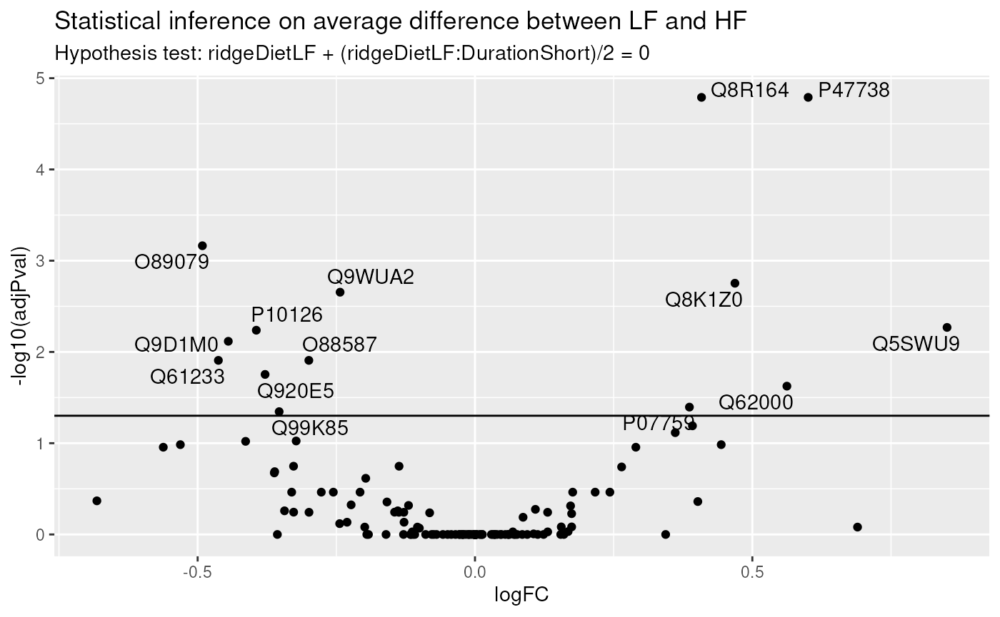
We find much more significant proteins when combining all available data to infer the differences between low-fat and high-fat diets, irrespective of duration. We also retrieve a good overlap between this set of significant proteins and the two previous sets, indicating that more data helped improving the statistical power.
Interaction: does the diet effect change according to duration?
We will now explore whether the effect of diet on protein abundance
may be affected by duration, i.e. we want to infer on the difference of
differences. The difference between hypothesis 1 and 2 is
(DietLF + DietLF:DurationShort) - (DietLF) and results in
the hypothesis below:
hypothesis4 <- "ridgeDietLF:DurationShort = 0"We can proceed with the same statistical pipeline.
L <- makeContrast(
hypothesis4,
parameterNames = c("ridgeDietLF","ridgeDurationShort","ridgeDietLF:DurationShort")
)
mouse <- hypothesisTest(
mouse, i = "proteins_msqrob", L, modelColumn = "msqrob_psm"
)
inference <- rowData(mouse[["proteins_msqrob"]])[[colnames(L)]]
inference$Protein <- rownames(inference)And we plot the results.
ggplot(inference) +
aes(x = logFC, y = -log10(adjPval)) +
geom_hline(yintercept = -log10(0.05)) +
geom_text_repel(data = filter(inference, adjPval < 0.05),
aes(label = Protein)) +
geom_point() +
ggtitle("Statistical inference on the effect of duration on the differences between diets",
paste("Hypothesis test:", gsub("ridgeCondition", "", colnames(L)), "= 0"))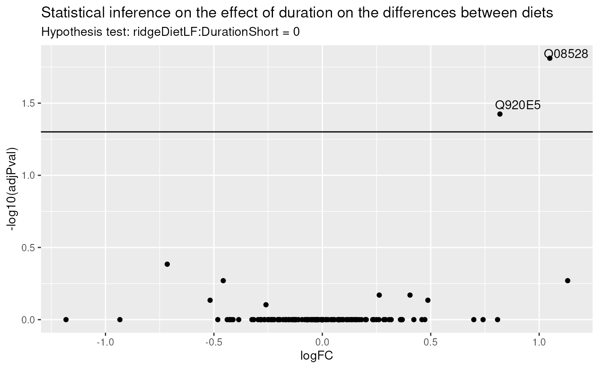
There is only one protein for which duration impacts the effect of diet. Let us visually explore this changes for the most significant protein.
## [1] "O08528"We use again Qfeatures’s data manipulation pipeline.
ionData <- mouse[targetProtein, , "ions_norm"] |> #1
longForm(colvars = colnames(colData(mouse)), #2
rowvars = c("Protein.Accessions", "ionID")) |>
data.frame() |>
filter(!is.na(value)) |> #3
mutate(colname = factor(colname, levels = unique(colname[order(Condition)]))) #4And explore the peptide ion data, this time also facetting for duration in order to highlight changes in direction of the difference between low-fat and high-fat diets.
ggplot(ionData) +
aes(x = Run, #colname,
y = value) +
# geom_line(aes(group = ionID), linewidth = 0.1) +
#geom_point(aes(colour = Condition)) +
# geom_boxplot(aes(colour = Condition)) +
geom_point(aes(shape = rowname, colour = Diet)) +
facet_wrap(Duration ~ Mixture, scales = "free_x", labeller = label_both) +
#labs(x = "Sample", y = "log2 intensity") +
labs(x = "Run", y = "log2 intensity") +
ggtitle(targetProtein) +
theme_minimal() +
theme(axis.text.x = element_blank(),legend.position = "none")
The graph hints towards a slight increase in protein abundance in the low-fat diet group compared to the high-fat diet group during a short diet duration, but this increase disappears after a long diet duration. However, the visual inspection of the results also shows that the result rely on sparse and highly unbalanced data. The results may hence require further experimental validation.
Note that we performed the statistical analysis for each hypothesis
separately. However, msqrob2 can assess multiple hypothesis
at once.
L <- makeContrast(
c(hypothesis1, hypothesis2, hypothesis3, hypothesis4),
parameterNames = c("ridgeDietLF","ridgeDurationShort","ridgeDietLF:DurationShort")
)
mouse <- hypothesisTest(
mouse, i = "proteins_msqrob", L,
modelColumn = "msqrob_psm", overwrite = TRUE
)Note that since we already generated results for the contrast, we
overwrite the results with the argument
overwrite = TRUE.
We retrieve the inference tables from the rowData to
generate the volcano plot.
inferenceTables <- rowData(mouse[["proteins_msqrob"]])[, colnames(L)]We here use a lapply() loop to generate the plots. The
code chunk is elaborate, but follows the same structure as in the
previous section. This generates a list of volcano plots, one for each
hypothesis.
volcanoPlots <- lapply(colnames(inferenceTables), function(i) {
inference <- inferenceTables[[i]]
inference$Protein <- rownames(inference)
ggplot(inference) +
aes(x = logFC, y = -log10(adjPval)) +
geom_hline(yintercept = -log10(0.05)) +
geom_text_repel(data = filter(inference, adjPval < 0.05),
aes(label = Protein)) +
geom_point() +
ggtitle("Hypothesis test:",
paste(gsub("ridge", "", i), "= 0"))
})We combine all the plots in a single figure using the
patchwork packages.
wrap_plots(volcanoPlots)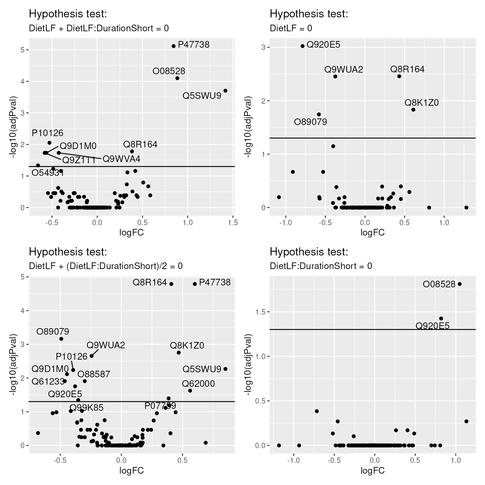
Protein-level model
This section illustrate data modelling at the protein level instead of the PSM level as shown in the previous sections.
Here, we work with a workflow where the peptide ion intensities are summarised within each run. This has already been done in the preprocessing. Note, that we no longer have multiple abundance values for a protein in the same label of a run. Hence, we can omit the nested effects for label and ionID in run.
modelSum <- ~ Diet * Duration + ## fixed effect for Diet and Duration with interaction
# (1 | Channel) + ## (1) random effect for channel is negligible
(1 | Mixture) + ## (2) random effect for mixture
(1 | Run) + ## (3) random effect for MS run
(1 | BioReplicate) ## (6) random effect for biorepeat (mouse)For protein-level modelling, we use msqrob() instead of
msqrobAggregate(), but their function arguments closely
overlap.
mouse <- msqrob(
mouse, i = "proteins",
formula = modelSum,
modelColumnName = "msqrob_rrilmm",
ridge = TRUE, robust = TRUE
)We perform hypothesis tests for the early, late, average and interaction effects. Note, that the specification of contrasts for the fixed effects remains the same.
mouse <- hypothesisTest(
mouse, i = "proteins", L, modelColumn = "msqrob_rrilmm"
)The inference tables were all stored in the rowData as
separate columns, like previously.
inferenceTablesSum <- rowData(mouse[["proteins"]])[, colnames(L)]We here use again the lapply() loop that generates the
list of volcano plots, one for each hypothesis.
volcanoPlotsSum <- lapply(names(inferenceTablesSum), function(i) {
inference <- inferenceTablesSum[[i]]
inference$Protein <- rownames(inference)
ggplot(inference) +
aes(x = logFC, y = -log10(adjPval)) +
geom_hline(yintercept = -log10(0.05)) +
geom_text_repel(data = filter(inference, adjPval < 0.05),
aes(label = Protein)) +
geom_point() +
ggtitle("Hypothesis test:",
paste(gsub("tests_|ridge", "", i), "= 0"))
})
wrap_plots(volcanoPlotsSum)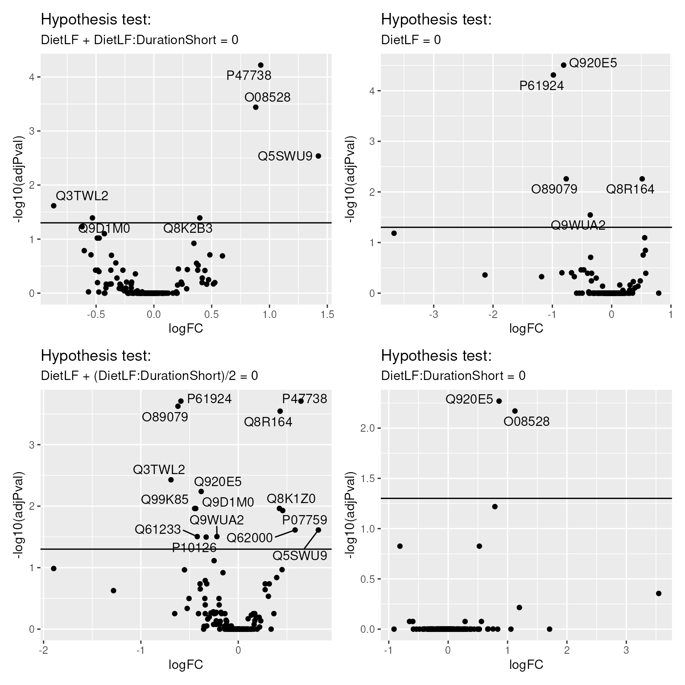
Conclusion
In this vignette, we have demonstrated the application of msqrob2TMT workflows on a real-life case study.
The preprocessing workflow relies on the the QFeatures
package. The package provides functionality to carry out many steps like
data filtering, missing values management, normalisation,
log-transformation, imputation, summarisation, etc. The functions also
provide different methods for each step, meaning that the preprocessing
pipeline can be easily adapted to the researcher’s needs based on their
experiment and data set.
Once preprocessed, we use the msqrob2 package to model
all sources of variability as identified from the experiment: effect of
diet and duration, effect of the MS acquisition run, effect of TMT
mixture, effect of spectrum, and effect of sample. Modelling these
different sources of variability allows to correctly infer changes in
protein abundances between groups of interest while using PSM-level
data, although we also illustrate how to model the data at the protein
level.
The experiment aims to understand the proteomic changes in mouse
adipose tissue that occur upon feeding the mice with low-fat or high-fat
diets, during a short or a long duration. We showed how to model these
data as two factor and how to translate biological questions to
statistical hypothesis and contrast matrices using our msqrob2TMT
workflow. To allow for the diet duration to influence the impact of diet
type, we included an interaction term. The unique feature of
msqrob2 is that its flexible approach can include more than
2 variables (with multiple interaction terms) as well as including
numerical variables, which may be essential in other experimental
contexts.
Modelling TMT-based data with biological replication leads to one of the most complex designs. These have to be further complexified with upcoming single-cell proteomics design where a new source of variability arises as cells belonging to the same experimental unit (subject or cell culture) are more similar than cells belonging to different experimental units. However, the model simplifies for other use cases. For instance, we saw how a protein-level model upon aggregation simplifies the model. However, spectrum effects can no longer be accounted for. This means that an appropriate summarisation approach is needed to correctly account for these spectrum effects when computing the summaries. Median polish (exemplified here) or robust summary do account for this, at least partially depending on the experimental design. Label-free experiments, which do not perform chemical labelling of the samples, do not contain labelling effects which therefore are omitted. Moreover, every sample is acquired as part of a single run hence no run effect can be modelled. This simplified model is easier to understand but bear in mind that the unmodelled effects (eg. spectrum effects or run effect) may end up increasing the residual variance, hence reduce statistical power.
Hence, we here demonstrated the power and flexibility of
msqrob2 and the msqrob2TMT workflows to help researchers
answer biologically-relevant questions from their MS proteomics
data.
Citation
Vandenbulcke S, Vanderaa C, Crook O, Martens L, Clement L. msqrob2TMT: robust linear mixed models for inferring differential abundant proteins in labelled experiments with arbitrarily complex design. bioRxiv. Published online March 29, 2024:2024.03.29.587218. doi:10.1101/2024.03.29.587218
License
This vignette is distributed under a Artistic-2.0 license.
Session info
## R version 4.5.1 (2025-06-13)
## Platform: x86_64-pc-linux-gnu
## Running under: Ubuntu 24.04.2 LTS
##
## Matrix products: default
## BLAS: /usr/lib/x86_64-linux-gnu/openblas-pthread/libblas.so.3
## LAPACK: /usr/lib/x86_64-linux-gnu/openblas-pthread/libopenblasp-r0.3.26.so; LAPACK version 3.12.0
##
## locale:
## [1] LC_CTYPE=en_US.UTF-8 LC_NUMERIC=C
## [3] LC_TIME=en_US.UTF-8 LC_COLLATE=en_US.UTF-8
## [5] LC_MONETARY=en_US.UTF-8 LC_MESSAGES=en_US.UTF-8
## [7] LC_PAPER=en_US.UTF-8 LC_NAME=C
## [9] LC_ADDRESS=C LC_TELEPHONE=C
## [11] LC_MEASUREMENT=en_US.UTF-8 LC_IDENTIFICATION=C
##
## time zone: Etc/UTC
## tzcode source: system (glibc)
##
## attached base packages:
## [1] stats4 stats graphics grDevices utils datasets methods
## [8] base
##
## other attached packages:
## [1] ExploreModelMatrix_1.21.0 BiocFileCache_2.99.6
## [3] dbplyr_2.5.0 BiocParallel_1.43.4
## [5] patchwork_1.3.2 ggrepel_0.9.6
## [7] ggplot2_3.5.2 dplyr_1.1.4
## [9] msqrob2_1.17.1 QFeatures_1.19.3
## [11] MultiAssayExperiment_1.35.9 SummarizedExperiment_1.39.1
## [13] Biobase_2.69.0 GenomicRanges_1.61.1
## [15] Seqinfo_0.99.2 IRanges_2.43.0
## [17] S4Vectors_0.47.0 BiocGenerics_0.55.1
## [19] generics_0.1.4 MatrixGenerics_1.21.0
## [21] matrixStats_1.5.0
##
## loaded via a namespace (and not attached):
## [1] Rdpack_2.6.4 DBI_1.2.3 httr2_1.2.1
## [4] rlang_1.1.6 magrittr_2.0.3 shinydashboard_0.7.3
## [7] clue_0.3-66 compiler_4.5.1 RSQLite_2.4.3
## [10] systemfonts_1.2.3 vctrs_0.6.5 reshape2_1.4.4
## [13] stringr_1.5.1 ProtGenerics_1.41.0 pkgconfig_2.0.3
## [16] crayon_1.5.3 fastmap_1.2.0 XVector_0.49.0
## [19] labeling_0.4.3 promises_1.3.3 rmarkdown_2.29
## [22] nloptr_2.2.1 ragg_1.4.0 purrr_1.1.0
## [25] bit_4.6.0 xfun_0.53 cachem_1.1.0
## [28] jsonlite_2.0.0 blob_1.2.4 later_1.4.3
## [31] DelayedArray_0.35.2 parallel_4.5.1 cluster_2.1.8.1
## [34] R6_2.6.1 bslib_0.9.0 stringi_1.8.7
## [37] RColorBrewer_1.1-3 limma_3.65.3 boot_1.3-31
## [40] jquerylib_0.1.4 Rcpp_1.1.0 knitr_1.50
## [43] BiocBaseUtils_1.11.2 httpuv_1.6.16 Matrix_1.7-3
## [46] splines_4.5.1 igraph_2.1.4 tidyselect_1.2.1
## [49] abind_1.4-8 yaml_2.3.10 codetools_0.2-20
## [52] curl_7.0.0 lattice_0.22-7 tibble_3.3.0
## [55] plyr_1.8.9 shiny_1.11.1 withr_3.0.2
## [58] evaluate_1.0.4 desc_1.4.3 filelock_1.0.3
## [61] pillar_1.11.0 BiocManager_1.30.26 DT_0.33
## [64] shinyjs_2.1.0 reformulas_0.4.1 scales_1.4.0
## [67] minqa_1.2.8 xtable_1.8-4 BiocStyle_2.37.1
## [70] glue_1.8.0 lazyeval_0.2.2 tools_4.5.1
## [73] lme4_1.1-37 fs_1.6.6 cowplot_1.2.0
## [76] grid_4.5.1 tidyr_1.3.1 rbibutils_2.3
## [79] MsCoreUtils_1.21.0 nlme_3.1-168 cli_3.6.5
## [82] rappdirs_0.3.3 textshaping_1.0.1 S4Arrays_1.9.1
## [85] AnnotationFilter_1.33.0 gtable_0.3.6 rintrojs_0.3.4
## [88] sass_0.4.10 digest_0.6.37 SparseArray_1.9.1
## [91] htmlwidgets_1.6.4 farver_2.1.2 memoise_2.0.1
## [94] htmltools_0.5.8.1 pkgdown_2.1.3 lifecycle_1.0.4
## [97] mime_0.13 statmod_1.5.0 bit64_4.6.0-1
## [100] MASS_7.3-65